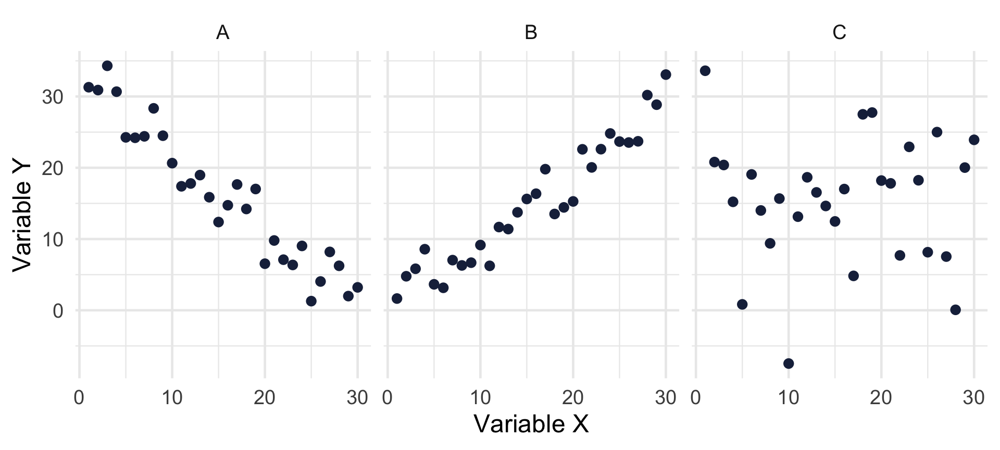
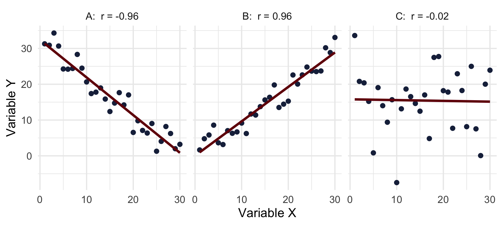
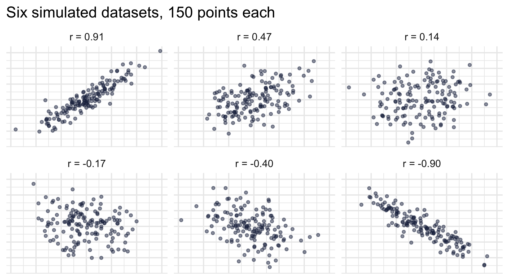
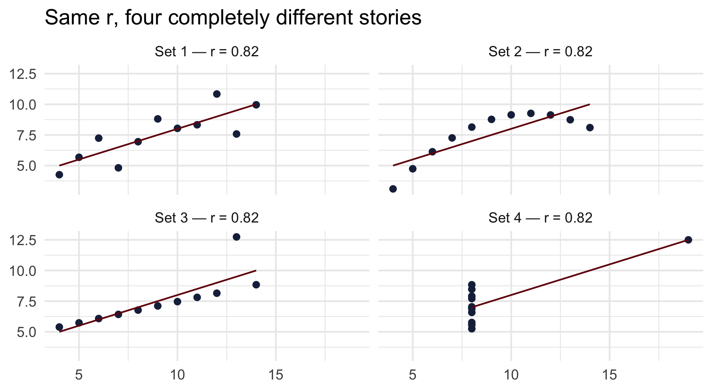
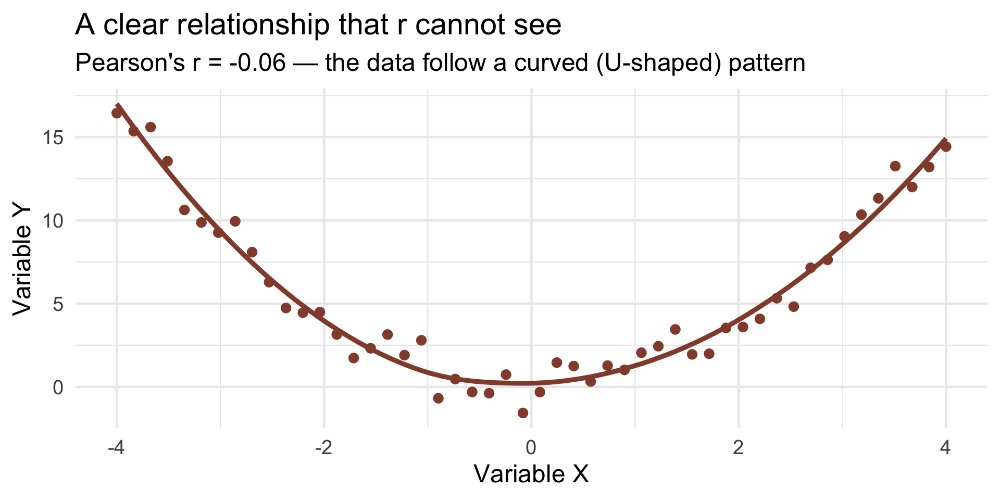
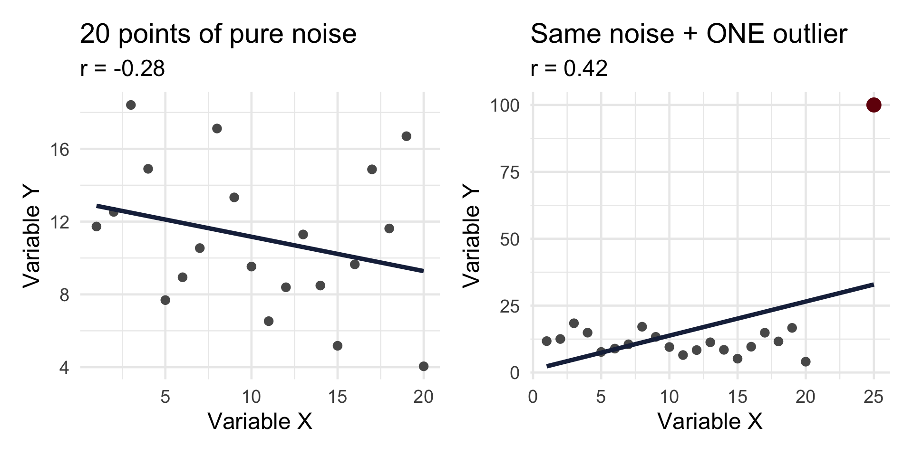
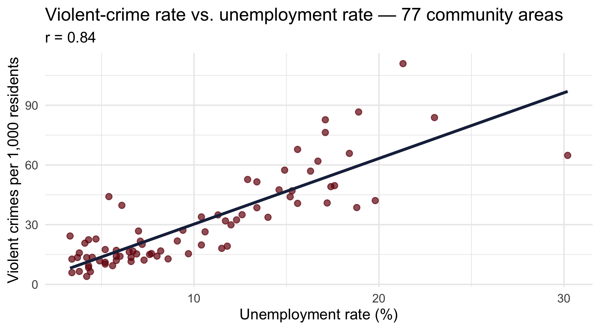
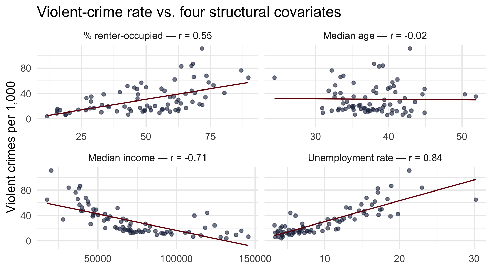
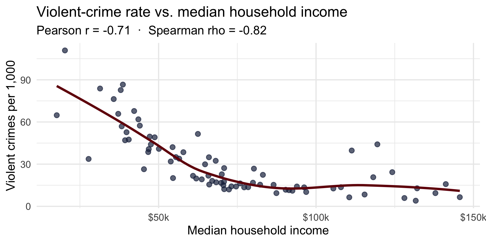
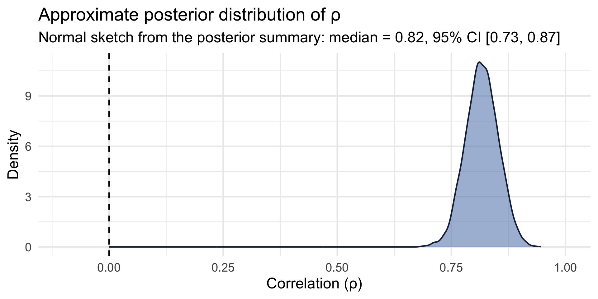

[1] 107.7543[1] -482660.1CRJU 705 · Session 10 · Fall 2026
Topic: measuring how two numeric variables move together
cor.test() and Bayesian, via the correlation packageLearning goals: interpret r’s sign and size; test it in both traditions; explain the ecological fallacy in one sentence.
When two variables move together, how can we describe that relationship?
Direction is only half the story. The strength of the relationship tells how tightly the changes are linked — that’s the number we build today.
Positive, negative, or nothing? Make your call for each panel:


The lines make it obvious — and the r values put a number on what your eye already knew.
Your turn: give me a CJ example of each — and one pair you suspect people believe is correlated but isn’t.
Observation by observation: do x and y sit on the same side of their means?
\[\text{cov}(x, y) \;=\; \frac{\sum_i (x_i - \bar{x})(y_i - \bar{y})}{n - 1}\]
Two covariances with violent crime, from our 77 Chicago community areas:
[1] 107.7543[1] -482660.1Is −482,660 a “stronger” relationship than 108? No idea — the first number lives in dollars × crimes per 1,000, the second in percentage points × crimes per 1,000. Covariance is glued to its units. You can’t compare across pairs.
Divide the covariance by both standard deviations and the units cancel:
\[r \;=\; \frac{\text{cov}(x, y)}{s_x \, s_y}\]
[1] 0.8398579[1] 0.8398579Always between −1 and +1, unit-free, comparable: income runs r = −0.71 with violence — so unemployment (0.84) tracks violence more tightly than income does, direction aside.
| Range of r | Strength | Direction | Example interpretation |
|---|---|---|---|
| +0.8 to +1.0 | Very strong | Positive | More prior arrests → much higher recidivism score |
| +0.4 to +0.7 | Moderate | Positive | More training hours → higher confidence |
| 0 to +0.3 | Weak | Positive | Slight upward trend |
| −0.3 to 0 | Weak | Negative | Slight inverse trend |
| −0.7 to −0.4 | Moderate | Negative | More absences → lower grades |
| −1.0 to −0.8 | Very strong | Negative | More speed → less accuracy |
These bands are conventions, not laws — in messy social-science data, a “moderate” r can be a major finding.

By ±0.5 the trend is visible; below ±0.2 your eye mostly sees noise — and it’s right.
# A tibble: 4 × 4
set mean_x mean_y r
<chr> <dbl> <dbl> <dbl>
1 1 9 7.50 0.816
2 2 9 7.50 0.816
3 3 9 7.5 0.816
4 4 9 7.50 0.817Four little datasets that ship with R (Anscombe, 1973). Same means, same r = 0.82 to two decimals — statistically interchangeable. Right?

Only Set 1 is what you picture when someone says “r = 0.82.” Always plot before you correlate.

Think stress vs. performance: an inverted U. r ≈ 0 means no linear relationship — not no relationship.

Replace each value with its rank (1st, 2nd, 3rd…), then correlate the ranks. Spearman asks only: is the relationship consistently up or consistently down?
pearson spearman
0.4235804 -0.1142857 To Spearman, the wild point is just “rank 21”: it drifts from -0.29 to -0.11 — sign intact, still weak — while Pearson swung 0.70 and flipped sign. When data are skewed or outlier-prone, check Spearman alongside Pearson.
The anchor data’s second level (codebook): all 237,472 of 2025’s incidents, aggregated to the 77 community areas and joined with Census measures:
# A tibble: 3 × 5
community violent_rate unemployment_rate median_income pct_vacant
<chr> <dbl> <dbl> <dbl> <dbl>
1 Rogers Park 21.7 7.1 60916 9.5
2 West Ridge 12.2 7.3 70823 7.7
3 Uptown 22.8 4.7 70067 9.1A classic criminology-of-place question: which structural features of a neighborhood track its violence? Correlation is exactly the right first tool.

One dot = one community area. This is about as strong as area-level associations get in criminology.

Strong positive, moderate positive, strong negative — and one genuine nothing (median age). Real data span the whole menu.
Our r = 0.84 says: community areas with higher unemployment rates record more violent crime per 1,000 residents.
The ecological fallacy: using an aggregate-level association to make claims about individuals. Our data contain no individuals — every resident of an area gets the same 77 values. Nothing here says unemployed people commit violence.
The classic demonstration (Robinson, 1950): across U.S. states, more foreign-born residents went with higher literacy; across individuals, foreign-born residents had lower literacy. Same data, opposite signs — immigrants had settled in high-literacy states. Aggregation can weaken, exaggerate, or even flip an individual-level relationship.
✅ Defensible:
“Community areas with higher unemployment rates recorded higher violent-crime rates (r = 0.84).”
❌ Not defensible:
“Unemployed residents commit more violent crime.” (An individual-level claim — these data can’t see individuals.)
“Unemployment drives up violence.” (A causal claim — concentrated disadvantage, disinvestment, and policing patterns all lurk behind both variables.)

The decline is real but bent — steep across the lower-income areas, nearly flat past ~$90k — and income is right-skewed. The rank-based Spearman (−0.82) runs stronger than Pearson (−0.71) because it only asks “downhill?”, not “straight line?”.
We can see r = 0.84. Two honest questions remain — one per tradition:
In R, one function does the whole thing — and hands you a confidence interval too.
cor.test()
Pearson's product-moment correlation
data: areas$unemployment_rate and areas$violent_rate
t = 13.4, df = 75, p-value < 0.00000000000000022
alternative hypothesis: true correlation is not equal to 0
95 percent confidence interval:
0.7585749 0.8954023
sample estimates:
cor
0.8398579 Real analyses rarely stop at one pair. cor() takes every numeric column you feed it:
violent_rate unemployment_rate median_income pct_vacant
violent_rate 1.00 0.84 -0.71 0.81
unemployment_rate 0.84 1.00 -0.81 0.67
median_income -0.71 -0.81 1.00 -0.55
pct_vacant 0.81 0.67 -0.55 1.00Symmetric, 1s on the diagonal — a compact map of the association structure. But: no tests, no intervals.
correlation()The correlation package (easystats) tests every pair and attaches CIs — and it Holm-adjusts the p-values for the number of pairs. Six tests at once is exactly Session 8’s pile-of-tests problem, and the package handles it by default:
correlation()# Correlation Matrix (pearson-method)
Parameter1 | Parameter2 | r | 95% CI | t(75) | p
-----------------------------------------------------------------------------------
violent_rate | unemployment_rate | 0.84 | [ 0.76, 0.90] | 13.40 | < .001***
violent_rate | median_income | -0.71 | [-0.80, -0.57] | -8.66 | < .001***
violent_rate | pct_vacant | 0.81 | [ 0.72, 0.88] | 12.00 | < .001***
unemployment_rate | median_income | -0.81 | [-0.88, -0.72] | -12.05 | < .001***
unemployment_rate | pct_vacant | 0.67 | [ 0.52, 0.78] | 7.78 | < .001***
median_income | pct_vacant | -0.55 | [-0.69, -0.37] | -5.67 | < .001***
p-value adjustment method: Holm (1979)
Observations: 77bayesian = TRUEbrms in Session 8, no compilation wait — this samples in a blinkcorrelation(..., bayesian = TRUE)# Correlation Matrix (pearson-method)
Parameter1 | Parameter2 | rho | 95% CI | pd | % in ROPE
----------------------------------------------------------------------------
violent_rate | unemployment_rate | 0.82 | [0.73, 0.87] | 100%*** | 0%
Parameter1 | Prior | BF
------------------------------------------
violent_rate | Beta (3 +- 3) | 6.64e+17***
Observations: 77
The entire heap of credible values sits far from 0 (dashed line). That picture is what pd = 100% and the huge BF are summarizing.
# Correlation Matrix (pearson-method)
Parameter | pct_vacant | median_income | unemployment_rate
------------------------------------------------------------------
violent_rate | 0.79*** | -0.68*** | 0.82***
unemployment_rate | 0.64*** | -0.79*** |
median_income | -0.52*** | | Same map as the frequentist matrix, but every entry is now a posterior median with full uncertainty machinery behind it.
The default prior is "medium" skepticism. Loosen it and see what moves:
# Correlation Matrix (pearson-method)
Parameter1 | Parameter2 | rho | 95% CI | pd | % in ROPE
----------------------------------------------------------------------------
violent_rate | unemployment_rate | 0.83 | [0.75, 0.89] | 100%*** | 0%
Parameter1 | Prior | BF
------------------------------------------------
violent_rate | Beta (1.73 +- 1.73) | 2.05e+18***
Observations: 77| Feature | Frequentist (Pearson’s r) | Bayesian (ρ) |
|---|---|---|
| Output | Single value, r | Posterior distribution of ρ |
| Uncertainty | 95% confidence interval | 95% credible interval |
| Evidence measure | p-value | Posterior probability, Bayes factor |
| Prior information | None | Included (by prior width) |
| Interpretation | “If no true correlation…” | “Given data, how probable is each value of ρ?” |
Frequentist: “Across Chicago’s 77 community areas, unemployment was strongly associated with the violent-crime rate, r = .84, t(75) = 13.4, p < .001, 95% CI [.76, .90]. This is an area-level association; it does not speak to individuals.”
Bayesian: “The posterior median correlation was ρ ≈ .82, 95% credible interval [.73, .87], BF₁₀ ≈ 10¹⁷ — overwhelming evidence for a strong positive area-level association.”
Direction, strength, uncertainty, and the level of analysis — every time.
pct_no_hs_diploma — the share of an area’s adults without a high-school diploma. Before you compute anything: write down your predicted sign and rough size of its correlation with violent_rate.
Most people predict a strong positive. The data: r = 0.17, p = .14 — indistinguishable from nothing. Yet pct_bachelors runs a solid −0.45. Plausible-sounding covariates can fail, and correlated predictors tangle — untangling them is exactly Session 11’s job.
CRJU 705 · Session 10